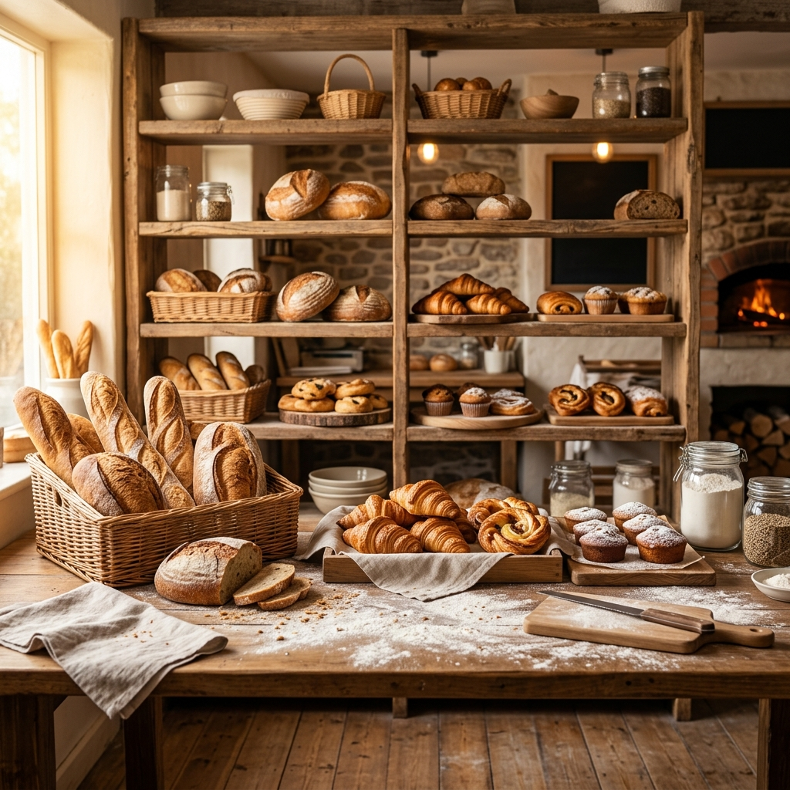

北海道産小麦と自家製酵母。
噛むほどに広がる小麦の高い香りと、
パリッとしたクラスト（皮）の食感。
街の小さなパン屋から、最高の朝をお届けします。
パンの骨格となる小麦は、北海道産「春よ恋」や「キタノカオリ」を独自にブレンドしています。水分をたっぷりと含み、もっちりとした食感と豊かな甘みが特徴です。
レーズンや季節のフルーツから起こした自家製酵母を使用し、一晩かけてゆっくりと低温発酵させています。これにより、複雑で奥深い旨味が引き立てられます。
冷凍生地は一切使用せず、毎日深夜から粉を量り、生地をこね、発酵させて焼き上げています。だからこそ味わえる、本当の「焼き立て」をお楽しみください。
定番の食事パンから、おやつにぴったりの甘いパンまで、約40種類をご用意しています。
フランス産の発酵バターをたっぷりと折り込みました。外はサクッと、中はジュワッとした至福の味わいです。
水・粉・塩・酵母のみのシンプルな材料で作る、当店自慢のフランスパン。バリッとした皮の香ばしさがたまりません。
自家製サワー種を使用した、ほんのりとした酸味が特徴のお食事パン。スープやチーズとの相性が抜群です。
セイロンシナモンとブラウンシュガーをたっぷり巻き込み、焼き立てに濃厚なクリームチーズフロスティングを乗せました。
その一番おいしい瞬間を狙って、ぜひご来店ください。
※発酵の具合によって、時間が前後する場合がございます。売り切れ次第終了となりますのでご了承ください。
店内には8席のイートインスペースをご用意しています。挽き立ての豆で淹れるスペシャルティコーヒーと、焼き立てのパン。最高のマリアージュを店内でそのままお楽しみいただけます。